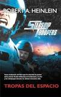

Tropas Del Espacio

Sinopsis
AUTOR: ROBERT A. HEINLEIN
Nuestra misión consiste en que el enemigo comprenda que podríamos
destruir su ciudad, aunque no lo hagamos, pero que no pueden sentirse
seguros aunque nos abstengamos de efectuar un bombardeo total»,
les dice el sargento Jelal a los soldados bajo su mando, llamados
Los Rufianes de Rasczak. Estos bajan en cápsulas lanzadas por la nave
Rodger Young a una ciudad "huesuda" (raza alienígena de forma humanoide
pero, como se los describe en el libro, con los huesos muy marcados)
aliada a las chinches, unos seres pseudo arácnidos de tres metros de
altura. Ocasionan numerosos destrozos y muertes y regresan a la nave
con tan sólo una baja. Uno de estos soldados, jefe ayudante de sección,
es Johnnie Rico, quien se enroló influenciado por un amigo en la
Infantería Móvil. Tras un duro adiestramiento en el campamento Arthur
Currie, bajo las órdenes del sargento instructor Zim, se convirtió
en un “Soldado Adiestrado”. Estalló entonces la llamada Guerra de las
Chinches, cuyo mayor detonante fue la destrucción de Buenos Aires. A
bordo de la nave Valley Forge, participó en el ataque a Klendathu,
aunque este primer ataque resultó un desastre: la nave chocó con otra y
se produjeron muchas bajas. Johnnie pasó a formar parte de la tripulación
de la nave Rodger Young. Tras este último ataque, la nave retorna al
planeta Santuario para rearmarse. Durante esta estancia, Johnnie se
convierte en oficial, y pasa a la nave Tours, desde la que participa en
el ataque al planeta P, una base de las chinches, donde resulta herido.
Tiempo después, de nuevo en la Rodger Young, vuelve a intervenir en otro
ataque al planeta de las chinches, aunque esta vez lo
hace como teniente.